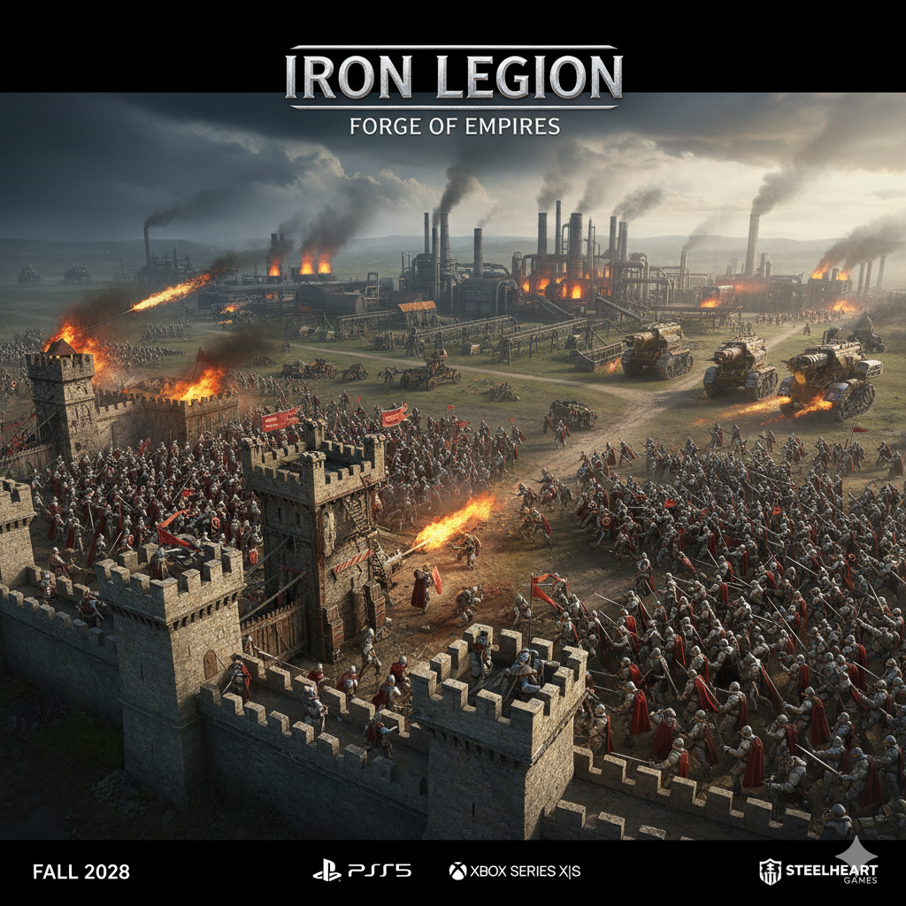

IRON LEGION: FORGE OF EMPIRES.
Em um mundo assolado por séculos de guerras e conflitos, onde a fumaça de forjas incessantes obscurece o sol, a humanidade está dividida. Grandes impérios se erguem e caem, alimentados pela insaciável sede de poder e controle sobre os recursos cada vez mais escassos. Você é o Arquiteto da Guerra, o líder de uma facção emergente com a ambição de moldar o destino do continente. Começando com uma modesta fortaleza e um punhado de leais soldados, sua missão é clara: construir, expandir e conquistar. Do calor do seu centro de comando, você comandará legiões de infantaria blindada, tanques de cerco movidos a vapor e artilharia pesada que pode pulverizar muralhas. Mas a vitória não se resume apenas à força bruta; é sobre a inteligência estratégica. Gerencie seus recursos com sabedoria, pesquise novas tecnologias militares e forje alianças com vizinhos para esmagar seus inimigos em batalhas em tempo real de tirar o fôlego. A paisagem é um campo de batalha implacável, com vastas terras ricas em minério, selvas densas e ruínas antigas que guardam segredos e perigos. Cada decisão conta. Cada recurso é vital. Cada confronto é uma chance de provar sua supremacia. Você construirá um império que resistirá ao teste do tempo, ou suas legiões serão apenas mais uma pilha de ferro e ossos nas páginas da história? Forje seu império. Conquiste o mundo. Torne-se a Iron Legion.